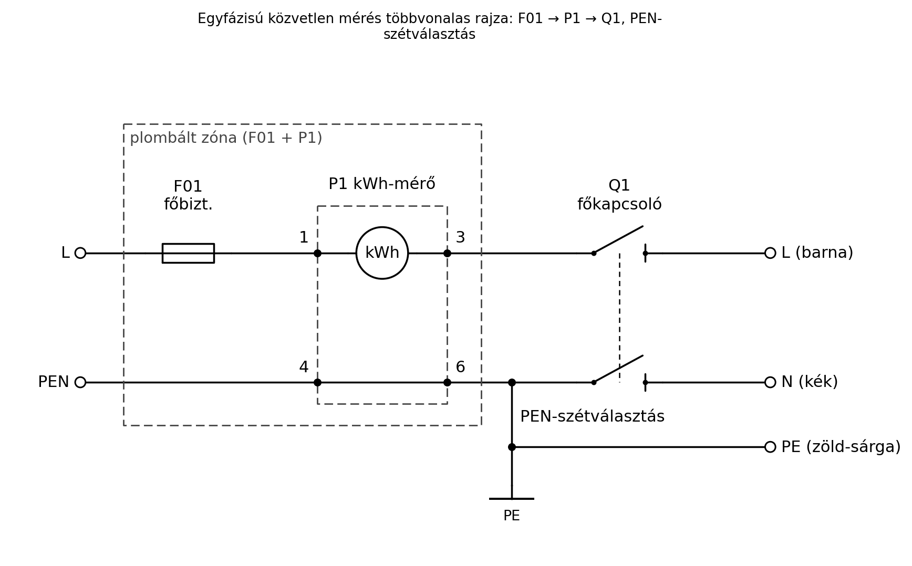
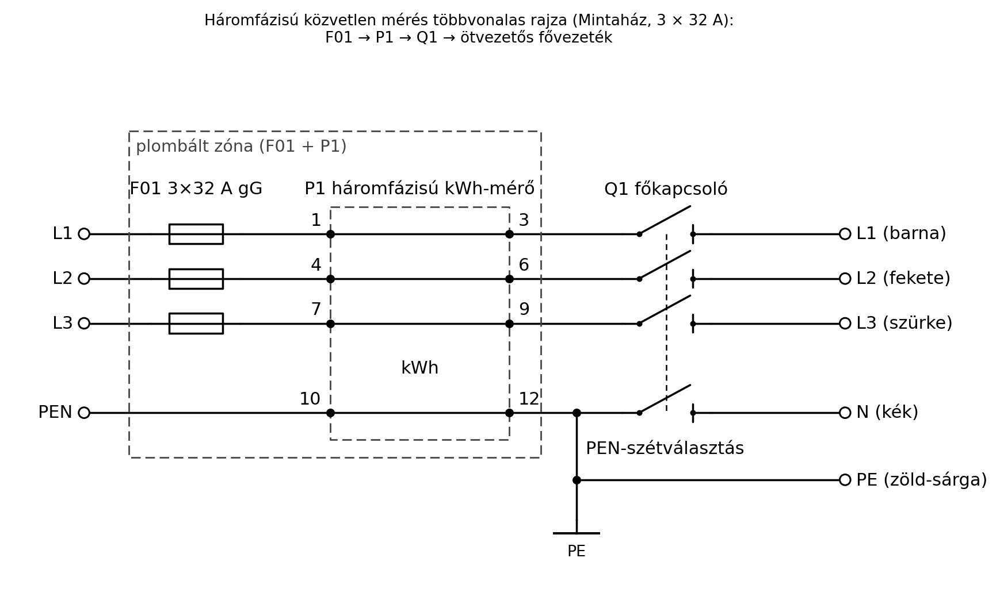
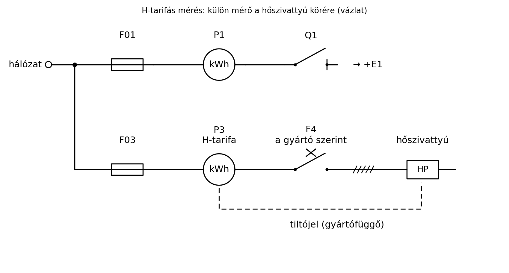

![Mérőhely egyvonalas rajza TN-C-S rendszerben: főbiztosító → mérő → főkapcsoló - Egyvonalas rajz: a felső vonal a három fázis (L1, L2, L3), az alsó a PEN. F01 háromfázisú főbiztosító és P1 háromfázisú, közvetlen fogyasztásmérő a plombált, hálózati engedélyesi zónában; Q1 főkapcsoló a fogyasztói mezőben. A PEN-t a hálózati engedélyes előírása szerinti ponton választják szét N-re és PE-re; ettől kezdve a kettő külön fut, és nem köthető össze. Tanulási példa (ellenőrizendő: a hálózati engedélyes műszaki feltételei).](assets/ve060-diagram-1.png)
Ha egy családi ház villanyszerelését építed, hiába szereled fel a lakáselosztót, a dugaszoló aljzatokat és a világítást, amíg az épületet nem csatlakoztatják a közcélú 230/400 V-os hálózathoz. A hálózati engedélyes soha nem fogja „bekötni az órát” egy kérésre, hanem megvizsgálja a mérőhely kialakítását, a csatlakozóvezetéket és a fogyasztói hálózatot. A mérőhely az a határfelület, ahol a szolgáltató és a fogyasztó felelőssége találkozik. Ha a mérőhely nem felel meg, az áramszolgáltatás nem indul el, és a villanyszerelővel szemben is megrendül a bizalom. Ezért pontosan kell ismerned az elosztóhálózat, a csatlakozóvezeték, a főbiztosító, a mérő és a főkapcsoló sorrendjét, valamint a plombálás szerepét.
Hogyan néz ki a csatlakozás a helyszínen? Az alábbi rajz a két leggyakoribb megoldást mutatja: (a) légvezetékes csatlakozásnál az oszloptól szigetelt csatlakozó légvezeték fut a tetőtartóig, onnan védőcsőben levezetve a homlokzati mérőszekrénybe; (b) földkábeles csatlakozásnál a járda alatti elosztókábelről a leágazó (csatlakozó-) szekrényen át földkábel megy a telekhatáron álló mérőszekrénybe. Mindkét esetben a mérőszekrényből a fővezeték visz a lakáselosztóig. A sávok azt mutatják, mi a hálózati engedélyes felelőssége (sraffozott, plombált) és mi a fogyasztóé, illetve a villanyszerelőé (pontozott).
A csatlakozási pont (⊗) a közcélú hálózat és a csatlakozóvezeték találkozása; a pontos tulajdon- és felelősségi határt a villamosenergia-törvény és az elosztói szabályzat rögzíti (ellenőrizendő: VET, elosztói szabályzat, a hálózati engedélyes csatlakozási feltételei). A HTML-kiadásban az egyes elemekre mutatva olvasható, ki a felelős értük és melyik szakasz tárgyalja őket. Ellenőrzés: keresd meg mindkét rajzon azt a pontot, ahonnan a villanyszerelő munkája kezdődik (a mérőhely fogyasztói mezője, a főkapcsoló), és azt, amelyikhez nem nyúlhat (főbiztosító, mérő, csatlakozóvezeték).
A csatlakozó légvezeték (NFA2X) és a földkábel jelölését a Vezeték- és kábeltípusok, jelölésrendszer alfejezet bontja fel.
A lánc sorrendje: a hálózati oldalról érkező csatlakozóvezeték a mérőhelybe lép, ahol először a főbiztosító, majd a fogyasztásmérő, utána a fogyasztói főkapcsoló, végül a fogyasztói elosztó felé a fővezeték következik. A mérő előtti részt a hálózati engedélyes plombálja, mert ott a fogyasztó nem avatkozhat be. A mérő után következő részt a fogyasztó szerelője alakíthatja ki, de a fővezetéknek is védelemmel ellátottnak kell lennie.
Definíció. A közcélú elosztóhálózat a hálózati engedélyes által üzemeltetett kisfeszültségű villamos hálózat, amely a fogyasztókhoz eljuttatja az energiát. Magyarországon a hálózati feszültség névleges értéke egyfázisú körben , háromfázisú körben vonali feszültség , frekvenciája .
Definíció. A csatlakozóvezeték (gyakran „bekötő vezeték”) az elosztóhálózat azon szakasza, amely a közcélú hálózat csatlakozási pontjától a fogyasztási helyig, rendszerint a mérőhelyig vezet. A csatlakozási pont a közcélú hálózat és a csatlakozóvezeték határa; a csatlakozóvezeték a csatlakozási ponttól a felhasználási helyig (mérőhelyig) tart. A csatlakozóvezeték tulajdonjoga és kiépítésének költségviselése jogszabályfüggő (ellenőrizendő: VET és az elosztói szabályzat hatályos szövege).
Definíció. A fővezeték a mérőhelytől (főkapcsolótól) a lakás- vagy épületelosztóig tartó fogyasztói vezeték.
Definíció. A főbiztosító a csatlakozóvezeték és a mérő közötti túláramvédelmi készülék. Feladata a fogyasztói hálózat és a mérő túláram-, elsősorban zárlatvédelme, valamint a hálózat védelme a fogyasztói oldalról visszaható hibákkal szemben. A főbiztosító értékét a hálózati engedélyes határozza meg a szerződött lekötött teljesítmény alapján, és azt a szolgáltató plombálja. A fogyasztó a főbiztosítót nem cserélheti, nem szerelheti ki, és nem avatkozhat bele.
Definíció. A fogyasztásmérő (energiamérő) az a mérőeszköz, amely a fogyasztó által vételezett villamos energiát integrálja, jellemzően kWh-ban. A mérő elve a Teljesítmény- és energiamérés, fogyasztásmérők alfejezetben már tárgyalt: a feszültség és az áram pillanatértékének szorzatát, vagyis a hatásos teljesítményt összegzi. Az elektronikus fogyasztásmérő a mérőállandó szerinti impulzusokat bocsát ki, és azokból származtatja a fogyasztást. A fogyasztásmérőt a hálózati engedélyes vagy az általa megbízott szolgáltató szereli fel, a mérésügyi törvény hatálya alá tartozik (ellenőrizendő: hatályos mérésügyi jogszabály).
Definíció. A mérőhely a fogyasztásmérő, a mérőváltók, a főbiztosító és a csatlakozó vezetékek elhelyezésére szolgáló, illetéktelen hozzáféréstől védett, plombálható tér vagy szekrény. A mérőhely lehet önálló mérőszekrény, mérőfülke, épületben kialakított, zárható mérőhelyiség, vagy a hálózati engedélyes által elfogadott egyéb megoldás.
A mérőhelynek egyértelműen el kell különítenie a hálózati engedélyes és a fogyasztó területét. A mérőszekrényben a sorrend mindig a következő:
A sorrendet egyvonalas kapcsolási rajzon az alábbi ábra mutatja. A felső vonal a három fázist jelöli (a „/ 3” jel szerint három vezető), az alsó a csatlakozóvezeték PEN-vezetőjét. Balról jobbra: F01 főbiztosító, P1 háromfázisú, közvetlen fogyasztásmérő (a fázisokra és a nullára kötve) – ez a kettő a plombált, hálózati engedélyesi zóna –, majd a fogyasztói mezőben a Q1 főkapcsoló és a lakáselosztó felé menő fővezeték. A PEN-t a szétválasztási ponton N-re és PE-re bontják, ettől kezdve a kettő külön fut.
Szabály. A fogyasztói főkapcsoló a mérő után, a fogyasztói oldalon helyezkedik el. Feladata, hogy a fogyasztói hálózatot egyetlen művelettel feszültségmentesíthessék, például karbantartáskor vagy vészhelyzetben. A főkapcsoló nem helyettesíti a túláramvédelmet; az elosztóban lévő kismegszakítók és védőkapcsolók külön védelmet adnak. A főkapcsoló névleges áramát a hálózati engedélyes által engedélyezett csatlakozási teljesítményhez igazítják.
Szabály. A mérőhelyet úgy kell kialakítani, hogy a fogyasztásmérőhöz és a plombált részekhez a fogyasztó ne férhessen hozzá a plomba megsértése nélkül. A mérést megkerülni tilos. A mérőszekrény általában:
Az egyvonalas rajz a sorrendet mutatja; a szereléshez és a hibakereséshez a többvonalas rajz kell, amelyen minden vezető külön vonal, és a készülékek kapcsai is látszanak. A mérőt itt egyszerűsített dobozként rajzoljuk, a kapcsai számával; a mérő belső felépítését és kapocsbekötését a Teljesítmény- és energiamérés, fogyasztásmérők alfejezet (8.4) háromfázisú közvetlen mérőről szóló ábrája mutatja. Mindkét rajz alapállású (Q1 kikapcsolva), jelölése: F01 főbiztosító, P1 fogyasztásmérő, Q1 főkapcsoló.


Olvasd végig a két rajzot a csatlakozótól a fővezetékig, és figyeld meg, hol változik meg a vezetők száma:
Szabvány. A mérőhely kialakítására a hálózati engedélyes saját műszaki feltételei, a csatlakozási pontra vonatkozó elosztói szabályzat és a hatályos MSZ HD 60364 sorozat az irányadó. A fogyasztásmérőre, a mérőváltókra és a plombálásra a mérésügyi törvény előírásai is vonatkoznak. Az itt bemutatott méretek és sorrendek tanulási példák, amelyeket az aktuális hálózati engedélyesi előírásokkal ellenőrizni kell. (ellenőrizendő: konkrét szabvány- és jogszabályhivatkozás, csatlakozási feltételek)
A mérőszekrényben a vezetékek színjelölése a szokásos: fázisvezető barna, fekete, szürke; nullavezető világoskék; védővezető zöld-sárga. A mérő előtti részen a nullavezető és a védővezető kapcsolata rendszertől függ: TN-C rendszerben PEN vezető van, amelyet a hálózati engedélyes által elfogadott ponton (jellemzően a mérőhelyen) választanak szét, ha a fogyasztói oldal TN-S. A szétválasztásról a Hálózati rendszerek: TN-C, TN-S, TN-C-S, TT, IT alfejezetben lesz szó. A szétválasztási ponton túl nem szabad a PE és N vezetőt újra összekötni.
Áramváltós (félközvetett) mérés. Nagyobb, jellemzően kb. 63–80 A fölötti csatlakozásnál (ellenőrizendő: a hálózati engedélyes határa) a mérő nem közvetlenül a fázisáramot kapja, hanem áramváltók S1–S2 szekunder kapcsain keresztül mér. Az áramváltó szekunder körét terhelés alatt megbontani tilos, mert a nyitott szekunder tekercsen veszélyesen nagy feszültség keletkezik. A bekötést a hálózati engedélyes (mérőüzemeltető) végzi. Az elvet a 8.4 alfejezet, a rajzjelet a Rajzjelek függelék mutatja. Ipari fogyasztónál a félközvetett és a középfeszültségű csatlakozást, a tulajdoni határt és a lekötött teljesítményt a Csatlakozási hely és ipari fogyasztói berendezés kialakítása alfejezet tárgyalja.
Kétirányú (ad-vesz) mérés. Háztartási méretű kiserőmű (HMKE, például napelem) esetén a mérő a vételezést és a betáplálást külön regiszterben méri. A szerelő a fogyasztói oldalon az inverter körét a 36.3 alfejezet szerint alakítja ki; a mérőcserét a hálózati engedélyes végzi (ellenőrizendő: a csatlakozási eljárás). A vezérelt mérés (lásd lent, „Több tarifa, több mérő”) és a HMKE egy mérőhelyen együtt is előfordulhat.
A mérőszekrény szerkezetileg gyakran három fő mezőre oszlik, amelyek hozzáférési jogosultságban is különböznek:
Az alábbi ábra egy háromfázisú, közvetlen mérésű mérőszekrényt mutat nyitott ajtóval. Felül a hálózati mező: a csatlakozóvezeték (1) a bevezető kapcsokra (2) érkezik (L1, L2, L3, PEN), utána a főbiztosító (3) következik. Középen a mérőmező a fogyasztásmérővel (4); a főbiztosító fedelét és a mérő kapocsfedelét plomba (5) zárja. Alul a fogyasztói mező: a főkapcsoló (6), valamint a PEN-szétválasztás (7), ahol a PEN a PE-sínre fut, és onnan átkötő megy az N-sínre; ettől a ponttól a PE és az N (8) külön fut a lakáselosztó felé. A zárható ajtón (9) leolvasóablak van.
A sraffozott, plombált részhez a szerelő nem nyúlhat. A PEN-szétválasztás helyét és a főkapcsoló pólusszámát a hálózati engedélyes műszaki feltételei határozzák meg, ezért a rajz csak egy lehetséges elrendezés (ellenőrizendő: hálózati engedélyes műszaki feltételei). A HTML-kiadásban a plombált zóna kiemelése ki-be kapcsolható, és az egyes részekre mutatva olvasható a szerepük.
Definíció. A plombálás olyan hatósági vagy szolgáltatói lezárás, amely fizikailag megakadályozza, hogy illetéktelen személy a mérőhöz, a mérőváltókhoz, a főbiztosítóhoz vagy a mérő előtti hálózati részhez hozzáférjen anélkül, hogy a plomba sérülése láthatóvá válna. A plomba lehet ólompecsétes, műanyag pecsétes vagy csavaros plomba. A plomba eltávolítása, megkarcolása, áthidalása jogszabályellenes, és mérési bírságot, áram kikapcsolását, végső esetben büntetőeljárást vonhat maga után. (ellenőrizendő: hatályos jogszabályi szankciók)
A plombálás tehát nem a szerelő munkáját akadályozza, hanem a mérés hitelességét és a hálózati rendszer biztonságát védi. A szerelőnek mindig ellenőriznie kell, hogy a munkája során a plombák sértetlenek; ha sérülést észlel, köteles jelezni a hálózati engedélyesnek. A plomba eltávolítását csak a hálózati engedélyes vagy az általa feljogosított személy végezheti.
A plombákat az alábbi ábra mutatja. Az ólomplombánál a huzalt a csavarfej furatán és a fedél fülén fűzik át, a végeit ólomkorongba préselik, és a plombálófogó bélyegzőt nyom bele; a műanyag plomba forgózáras házában rögzül a huzal, a házon sorszám van. A szemrevételezéskor azt nézed, hogy a huzal és a bélyegző ép-e (harmadik kép); az elvágott vagy megbontott plomba (negyedik kép) esetén a mérőhöz nem nyúlsz, hanem jelzed a hálózati engedélyesnek.
A plomba sorszáma és a mérőállás az átvételi jegyzőkönyvben szerepel, ezért a sérülést a jegyzőkönyvvel összevetve is dokumentálni kell. A HTML-kiadásban a négy kép egyenként, nagyítva is megnézhető.
Sok hazai háztartásban van vezérelt (régi nevén „éjszakai”) árammal táplált villanybojler vagy hőtárolós kályha, az újabb hőszivattyús fűtéseknél pedig H-tarifás külön mérés. Ezeket a mérőhelyeket a villanyszerelő rendszeresen kialakítja és javítja, ezért a felépítésüket ismerni kell. A tarifák és a csatlakozási feltételek időben változnak: minden tarifális és jogi részlet ellenőrizendő a hálózati engedélyes és az egyetemes szolgáltató aktuális feltételeiben.
Definíció. A vezérelt tarifa olyan kedvezményes árú vételezés, amelyet a hálózati engedélyes a nap meghatározott időszakaiban engedélyez; a fogyasztást külön mérő vagy a mérő külön regisztere méri. A bekapcsolást a hangfrekvenciás központi vezérlés (HKV) vevője, egy időkapcsoló vagy az okosmérő beépített vezérlőrelé-kimenete adja (ellenőrizendő: a hálózati engedélyes megoldása).
Definíció. A H-tarifa hőszivattyús fűtés külön, kedvezményes tarifájú mérése, jellemzően a fűtési idényben (ellenőrizendő: az aktuális feltételek).
Szabály.
Az alábbi rajz egy egyfázisú példát mutat alapállapotban. Két ág indul: az általános (F01 → P1 → Q1 → lakáselosztó) és a vezérelt (F02 → P2 → K1 → Q6 FI → F3 → bojler). A K1 mágneskapcsoló tekercse a HKV-vevő vagy a mérő vezérlőrelé-érintkezőjén át kap feszültséget.
![Vezérelt (éjszakai) bojlerkör a mérőhelyen – egyfázisú példa, alapállapot - Tanulási példa (alapállapot: vezérlőjel nincs, K1 elengedve). Általános ág: F01 főbiztosító → P1 mérő → Q1 főkapcsoló → lakáselosztó. Vezérelt ág: F02 főbiztosító → P2 vezérelt mérő → K1 mágneskapcsoló főérintkezője → Q6 FI 30 mA (L és N) → F3 B16 → R1 bojler-fűtőbetét. A K1 tekercse (A1–A2) a HKV-vevő vagy a mérő vezérlőrelé-érintkezőjén át kap feszültséget. A szaggatott keret a plombált részt jelöli; a PEN-szétválasztás közös. A tarifális és jogi részletek ellenőrizendők (hálózati engedélyes, egyetemes szolgáltató).](assets/ve060-diagram-4.png)
A K1 a vezérlőjel idejére kapcsolja be a bojlert. Kövesd végig az áramutat: amíg a HKV/mérő relé érintkezője nyitva van, a K1 tekercse feszültségmentes, a főérintkezője nyitott, a bojler nem kap tápot (ilyenkor a bojler saját termosztátja hiába zárna). A vezérlőjel megjelenésekor a relé zár, a K1 behúz, és a bojler a P2 mérőn át melegít, amíg a termosztát le nem kapcsolja. A bojler belső kapcsolását a Aljzatkörök és fogyasztói csatlakozások, nedves helyiségek alfejezet „A villanybojler bekötése és belső kapcsolása” pontja mutatja.
H-tarifa. A hőszivattyú saját körét külön mérő méri; a mérő vagy a hálózati engedélyes jelzése a hőszivattyú vezérlésének „tiltó” bemenetén keresztül szüneteltetheti a működést (gyártófüggő, ellenőrizendő):

Ha nappal is kell meleg víz. Kétfűtőbetétes vagy gyártói átkapcsolóval szerelt bojlernél az egyik betét a vezérelt, a másik az általános körről kaphat tápot, de a két kör csak a gyártó által engedett módon, egymással összekötés nélkül csatlakozhat (ellenőrizendő: gyártói bekötési rajz és a hálózati engedélyes feltételei).
Hibakeresés.
| Tünet | Valószínű ok | Teendő |
|---|---|---|
| A bojler soha nem melegít | nem jön vezérlőjel, a K1 tekercse vagy érintkezője hibás | a plombált részhez a hálózati engedélyest kell hívni; a fogyasztói oldalon a Q6, az F3 és a bojler ellenőrizhető |
| A bojler nappal is melegít | a vezérelt és az általános kör össze van kötve | szabálytalan, azonnal megszüntetendő (a mérést is megkerüli) |
| Bekapcsoláskor kiold a FI | a fűtőbetét szigetelési hibája | a bojler hibakeresési táblázata a 16.4-ben |
A fogyasztói csatlakozás szigorúan szabályozott folyamat. Az alábbi lépések általában érvényesek, de az egyes hálózati engedélyesek eljárásrendje eltérhet:
Szabály. A csatlakozási dokumentációt a fogyasztói berendezés átadásakor meg kell őrizni. A mérőállás induló értéke, a főbiztosító értéke, a lekötött teljesítmény és a plomba száma is szerepel az átvételi jegyzőkönyvben. A későbbi felülvizsgálatnál ezek az adatok alapvetők.
A hibák elkerüléséhez fontos tudni, hol húzódik a határ. A hálózati engedélyes feladata:
A villanyszerelő (a megrendelő oldalán) feladata:
A szerelő nem nyúlhat a főbiztosítóhoz, nem szerelheti le a plombát, nem cserélheti a mérőt, és nem köthet a mérő előtti hálózati részre. A csatlakozóvezeték kivitelezését is csak a hálózati engedélyes engedélyével és felügyelete mellett végezheti, általában a kijelölt csatlakozási pontig. A mérőhelyi munkához jellemzően az elosztói engedélyesnél nyilvántartott, jogosult szerelő szükséges (ellenőrizendő: a hálózati engedélyes regisztrációs feltételei); a jogosultságok egymásra épülését a Munkaviszony, álláskeresés és munkajog alapjai alfejezet pályaív-pontja mutatja.
Biztonsági korlát. A feladat tanműhelyi (törpefeszültségű) környezetre vagy jogosult oktató felügyeletére vonatkozik; hálózati feszültségen önállóan ne végezd. A mérőhelyen és a csatlakozóvezetéken végzett munka mindig feszültségmentes állapotban történjen, az öt biztonsági szabály betartásával: lekapcsolás, visszakapcsolás elleni biztosítás, feszültségmentesség ellenőrzése, földelés és rövidre zárás, szomszédos feszültség alatti részek lefedése. A mérőhelyet a hálózati engedélyes gyakran feszültségmentesen adja át a szerelőnek; a munkavégzés után a fogyasztói rész leellenőrzése a szerelő feladata. A főkapcsoló kikapcsolása csak a kimenő oldalt teszi feszültségmentessé; a főkapcsoló bemenő kapcsai, a mérő kimenete és a mérőtől érkező vezeték feszültség alatt maradnak, ezek feszültségmentesítését (a plombált főbiztosító kiemelését) csak a hálózati engedélyes végezheti vagy az ő közreműködésével lehetséges.
Az alábbi képsor a fogyasztói oldali munka előtti leválasztást mutatja. Az 1. képen a főkapcsolót kikapcsoljuk, a 2. képen lakattal és figyelmeztető táblával biztosítjuk visszakapcsolás ellen, a 3. képen a kimenő oldalon kétpólusú feszültségvizsgálóval – amelyet előtte és utána ismert feszültségen kipróbálunk – minden pólus között ellenőrizzük a feszültségmentességet. A 4. kép a legfontosabbat emeli ki: a sraffozott rész, vagyis a mérő felőli vezeték és a főkapcsoló bemenő kapcsai ilyenkor is feszültség alatt vannak.
Ha a bemenő oldalon kell dolgozni, a feszültségmentesítést a hálózati engedélyestől kell kérni; a földelés és rövidre zárás, valamint a szomszédos részek lefedése az öt szabály szerint ezután következik. A HTML-kiadásban a lépések egyenként lejátszhatók.
Egy társasházi lakás bővítésekor a tulajdonos háromfázisú, nagyobb teljesítményű ellátást kér, mert klímát, indukciós főzőlapot és villanyautó-töltőt tervez. A szerelő felméri a meglévő mérőhelyet: a régi egyfázisú mérőszekrényben a főbiztosító 25 A, a mérő egyfázisú, a főkapcsoló 25 A. A hálózati engedélyes kiküldöttje megállapítja, hogy a csatlakozóvezeték keresztmetszete nem elegendő a nagyobb teljesítményhez, és a mérőszekrényt ki kell bővíteni háromfázisú mérőhellyel. A szerelő a mérőszekrényt kicseréli, a csatlakozóvezetéket a hálózati engedélyes szakembere cseréli ki a csatlakozási pontig, a főbiztosítót 3×32 A-re cseréli. A szerelő a mérő után főkapcsolót szerel (a pólusszám a hálózati engedélyes előírása szerint), majd a lakáselosztóhoz 3 fázisú fővezetéket épít ki. A hálózati engedélyes ellenőrzi a mérőhelyet, beszereli a háromfázisú mérőt, plombálja a mérőt és a főbiztosítót, majd feszültség alá helyez. A tanulság: a csatlakoztatás nem csupán a mérőhely belső szereléséből áll, hanem a hálózati oldal és a fogyasztói oldal együttes koordinációjából.
Gyakorlás: ennek az alfejezetnek a kidolgozott példái, gyakorlatai és megoldással ellátott feladatai az Összefoglaló feladatgyűjtemény villanyszerelő tanulóknak című kötet 17.1 szakaszában találhatók.
A közcélú hálózathoz csatlakozás lánca: elosztóhálózat → csatlakozóvezeték → főbiztosító → fogyasztásmérő → főkapcsoló → fogyasztói elosztó. A mérőhely határfelület a hálózati engedélyes és a fogyasztó között; a mérő előtti rész plombált, a mérő utáni főkapcsoló a fogyasztóé. A főbiztosítót a hálózati engedélyes határozza meg és plombálja; a fogyasztó nem avatkozhat bele. A mérőszekrénynek biztosítania kell az illetéktelen hozzáférés megakadályozását, a mérő hűtését, a szabványos védettséget és a feliratozást. A csatlakozási folyamat az igénybejelentéstől a műszaki feltételeken, a kivitelezésen, a hálózati engedélyesi ellenőrzésen, a mérő felszerelésén és plombálásán át az üzembe helyezésig tart. A plombálás megsértése jogi következményekkel jár. A szerelő a fogyasztói oldalt készíti elő, a hálózati engedélyes a hálózati oldalt és a mérőt. Ezt a mérőhelyet tovább építjük a Lakás- és épületelosztó felépítése alfejezetben, ahol a lakáselosztó belső tagolását és a fővezeték méretezését tárgyaljuk.